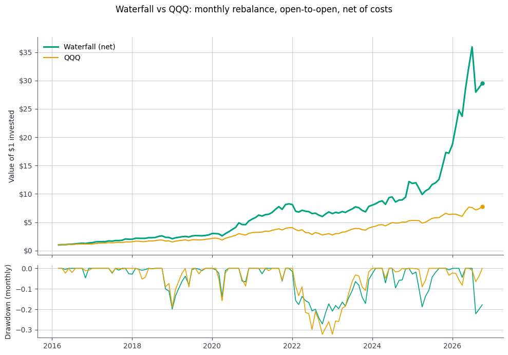
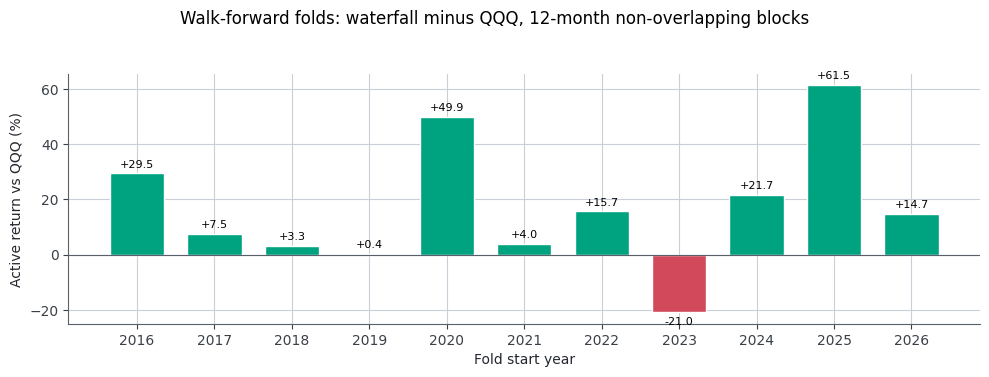
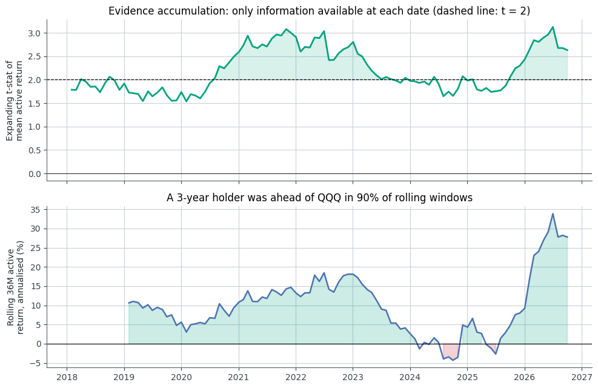
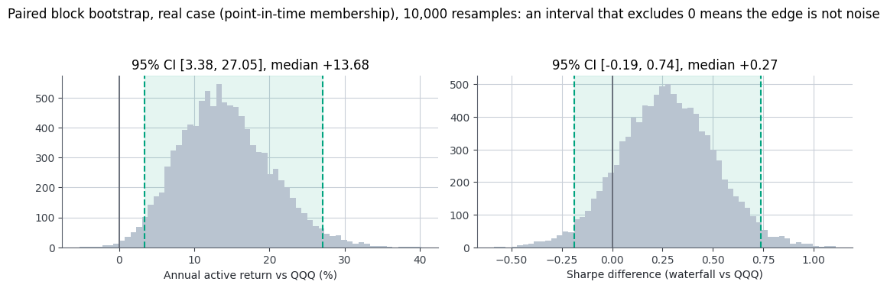
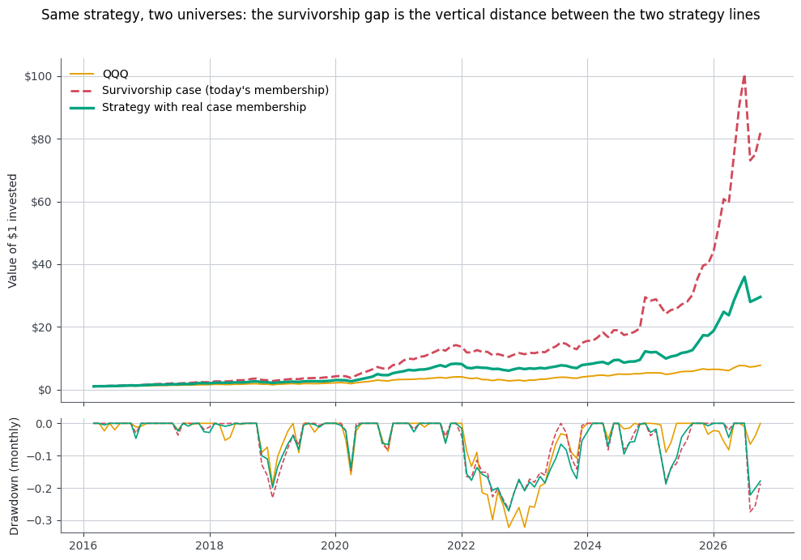

Nasdaq-100 Momentum Waterfall#
Evidence of an edge, tested twice: with and without survivorship bias#
Research question#
Does a monthly momentum waterfall applied to the Nasdaq-100 generate a statistically significant, economically meaningful, and persistent excess return over buy-and-hold QQQ, using only information available at each portfolio formation date?
The strategy#
index members (~100) | top 50 by 12M return | top 25 by 6M | top 10 by 3M | equal weight, monthly rebalance
Why a walk-forward without optimisation#
The rule has no fitted parameters: horizons (12/6/3 months) and funnel sizes (50/25/10) are fixed ex-ante and never tuned on this data. So there is no train/test leakage from parameter fitting, and the walk-forward is applied to the evidence instead of to a model: the history is replayed month by month exactly as a live investor would experience it.
Step |
Rule |
Why it matters |
|---|---|---|
Signal |
Last close of month t, prices ≤ t only |
Point in time only |
Execution |
Buy at the open of t+1, hold to the next rebalance open |
Realistic fills, no overnight gap “lost” |
Costs |
10 bp charged on every unit of notional traded |
Net results only |
Benchmark |
QQQ, same dates, dividend-adjusted like everything else |
Apples to apples |
Three questions are asked of the resulting out-of-sample track record:
Consistency: does the edge show up in independent 12-month folds, not just in the total? (§4)
Stability: as evidence accumulates month after month, does the statistical case strengthen and stay strong, or is it carried by one episode? (§5)
Significance: does it survive tests robust to autocorrelation and fat tails: HAC t-tests, CAPM alpha, block bootstrap? (§6)
Everything lands in an automatic scorecard (§7).
Honest scope. No parameter search was run, so there is no multiple-testing inflation from tuning. The design was chosen by a human who knew the history, and the universe uses point-in-time membership from
inout.xlsx(§1): additions count only from the year after they were recorded. Section 8 quantifies what changes when today’s membership is used at every date instead; section 9 states how far the conclusions can be pushed.
pip install numpy pandas matplotlib yfinance requests beautifulsoup4 openpyxl
Parameters & data#
All tunables live in one cell. Prices come from Yahoo Finance with auto_adjust=True (splits and dividends, stocks and benchmark alike) and are cached on disk, so the notebook is reproducible offline.
Point-in-time universe. inout.xlsx lists index additions (Ticker entrati) and removals (Ticker usciti) by calendar year (2015 to 2025). We do not have exact effective dates, so a change recorded in year Y takes effect from Jan 1 of Y+1: an addition is usable only starting the following year (its whole addition year is ignored), and a removal stays eligible through Dec 31 of its exit year. By January of the next year each event is unambiguously past, so no signal ever uses information that had not yet become public.
import os, warnings
from math import comb
import numpy as np
import pandas as pd
import matplotlib.pyplot as plt
warnings.filterwarnings("ignore", category=FutureWarning)
plt.rcParams.update({
"figure.figsize": (10, 4.5),
"axes.grid": True, "grid.color": "#c9cfd8",
"grid.linewidth": .8, "axes.axisbelow": True, # grid behind lines/bars
"axes.spines.top": False, "axes.spines.right": False,
"axes.edgecolor": "#595f6b", "axes.labelcolor": "#23272e",
"xtick.color": "#3a4048", "ytick.color": "#3a4048",
})
pd.set_option("display.float_format", "{:.3f}".format)
# Strategy: fixed ex-ante, never tuned on this data
N1, N2, N3 = 50, 25, 10 # top-N by 12M -> top-N by 6M -> top-N by 3M
COST_BPS = 10 # per unit of notional traded, one way
# Data / testing
START = "2015-01-01"
BENCH = "QQQ"
MEM_FILE = "inout.xlsx" # index additions/removals by calendar year (point-in-time universe)
RF = 0.0 # annual risk-free rate used in Sharpe
FOLD = 12 # walk-forward fold length (months)
HAC_LAGS = 3 # lag terms for the robust standard errors
BLOCK = 6 # bootstrap block length (months)
NSIM = 10_000
CACHE = "data/prices.pkl"
def nasdaq100_tickers():
"""Current Nasdaq-100 constituents, scraped from Wikipedia."""
import requests
from bs4 import BeautifulSoup
url = "https://en.wikipedia.org/wiki/List_of_NASDAQ-100_companies"
soup = BeautifulSoup(requests.get(url, headers={"User-Agent": "Mozilla/5.0"}).text, "html.parser")
table = soup.find("table", {"id": "constituents"})
return [r.find_all("td")[0].text.strip().replace(".", "-").upper()
for r in table.find_all("tr")[1:] if r.find_all("td")]
def load_membership():
"""Additions / removals per calendar year, from inout.xlsx."""
io_ = pd.read_excel(MEM_FILE).rename(columns=str.strip)
def parse(s):
return {t.strip().upper().replace(".", "-") for t in str(s).split(",") if t.strip()}
events = {}
for _, r in io_.iterrows():
y = int(r["Anno"])
for col, kind in [("Ticker entrati", "in"), ("Ticker usciti", "out")]:
if isinstance(r[col], str):
for t in parse(r[col]):
events.setdefault(t, set()).add((y, kind))
return {t: sorted(v) for t, v in events.items()}
EVENTS = load_membership()
def eligible_years(t):
"""Calendar years (int) during which t was a Nasdaq-100 constituent.
A change recorded in year Y applies from Jan 1 of Y+1."""
evs = EVENTS.get(t)
if not evs:
return None # no recorded change: assumed member throughout
state = (evs[0][1] == "out") # exit-only record means "member up to that year"
lo, ivals = (-9_000 if state else None), []
for y, k in evs:
s = y + 1 # change applies from Jan 1 of the following year
if k == "in" and not state:
lo, state = s, True
elif k == "out" and state:
ivals.append((lo, y)); lo, state = None, False
if state and lo is not None:
ivals.append((lo, pd.Timestamp.today().year)) # still a member: open interval
return set().union(*[range(a, b + 1) for a, b in ivals])
CURRENT = {t.upper().replace(".", "-") for t in nasdaq100_tickers()} # today's membership (survivorship case)
def load_prices():
import yfinance as yf
want = sorted(CURRENT | set(EVENTS)) # current + historical members
tickers = [t for t in want if t not in ("GOOG", BENCH)] + [BENCH]
cached, have = (None, set())
if os.path.exists(CACHE):
try:
cached = pd.read_pickle(CACHE)
have = set(cached["close"].columns)
except Exception: # cache written by another numpy version: rebuild silently
cached = None
close, open_ = (cached["close"], cached["open"]) if cached is not None else (pd.DataFrame(), pd.DataFrame())
missing = [t for t in tickers if t not in have]
if missing: # top up any symbol absent from the cache
raw = yf.download(missing, start=START, auto_adjust=True, progress=False)
got = [t for t in missing if t in raw["Close"].columns]
close = pd.concat([close, raw["Close"][got]], axis=1)
open_ = pd.concat([open_, raw["Open"][got]], axis=1)
cols = [c for c in tickers if c in set(close.columns)] # exact universe (bench last); stale columns dropped
os.makedirs(os.path.dirname(CACHE), exist_ok=True)
oc = [c for c in cols if c in set(open_.columns)]
pd.to_pickle({"close": close[cols], "open": open_[oc]}, CACHE)
return close[cols], open_[oc]
close, open_ = load_prices()
bench_open = open_.pop(BENCH)
close.pop(BENCH)
MEM = {t: eligible_years(t) for t in EVENTS} # calendar years per ticker (empty set: never eligible)
def constituents_at(t):
"""Eligible index members at signal date t (point-in-time)."""
y = t.year
return [x for x in close.columns if x not in MEM or y in MEM[x]]
Signals & backtest engine#
Momentum is the simple return over 3, 6 and 12 months on month-end closes. Holding-period returns are open-to-open: buy at the open of the first trading day after the signal, sell at the open of the first trading day of the next month (the same price at which the next portfolio is bought). Positions are buy-and-hold within the month. The engine takes any selection rule mapping a date to tickers, so the strategy and the baselines run through identical code.
days = close.index
# Last trading day of each month; drop the current month if still in progress
last_td = days.to_series().groupby(days.to_period("M")).max()
if (days[-1] + pd.offsets.BDay(1)).month == days[-1].month:
last_td = last_td.iloc[:-1]
mtl = close.loc[last_td.values] # month-end closes
m12 = mtl / mtl.shift(12) - 1
m6 = mtl / mtl.shift(6) - 1
m3 = mtl / mtl.shift(3) - 1
# Entry = open of the first trading day after each signal; exit = next entry
pos = days.get_indexer(mtl.index) + 1
has = pos < len(days)
entry = pd.Series(days[pos[has]], index=mtl.index[has])
def open_to_open(opens):
o = opens.loc[entry.values]
return (o.shift(-1) / o - 1).set_axis(entry.index).iloc[:-1]
R = open_to_open(open_) # stock returns, one row per signal date
B = open_to_open(bench_open.to_frame()).iloc[:, 0] # QQQ on identical dates
sig = R.index[R.index >= m12.dropna(how="all").index[0]] # first date with a full 12M signal
exit_date = entry.shift(-1).loc[sig]
B = B.loc[sig].set_axis(exit_date)
print(f"{len(sig)} monthly cohorts | signals {sig[0].date()} to {sig[-1].date()} | returns realised through {exit_date.iloc[-1].date()}")
128 monthly cohorts | signals 2016-01-29 to 2026-08-31 | returns realised through 2026-10-01
def waterfall(t, n1=N1, n2=N2, n3=N3):
p = m12.loc[t, constituents_at(t)].dropna().nlargest(n1).index # only point-in-time index members
p = m6.loc[t, p].dropna().nlargest(n2).index
return m3.loc[t, p].dropna().nlargest(n3).index
universe = lambda t: [x for x in constituents_at(t) if pd.notna(m12.loc[t, x])] # equal-weight index members (baseline of section 9)
def backtest(select, cost_bps=COST_BPS):
"""Equal weight, buy-and-hold within the month. Gross/net monthly returns + turnover."""
gross, turn, prev = [], [], set()
for t in sig:
picks = list(select(t))
gross.append(R.loc[t, picks].mean())
turn.append(1.0 if not prev else 2 * len(set(picks) - prev) / len(picks)) # fraction of book traded; full replacement = 2
prev = set(picks)
out = pd.DataFrame({"gross": gross, "turn": turn}, index=exit_date)
out["net"] = out.gross - out.turn * cost_bps / 1e4
return out
strat = backtest(waterfall)
ew = backtest(universe)
S = strat.net # strategy, net of costs: the series under test
A = S - B # monthly active return vs QQQ
print(f"Average monthly turnover (two-way): {strat.turn.mean():.0%} of the book")
def waterfall_biased(t, n1=N1, n2=N2, n3=N3):
pool = [x for x in CURRENT if x in close.columns] # today's members at every date: the survivorship case
p = m12.loc[t, pool].dropna().nlargest(n1).index
p = m6.loc[t, p].dropna().nlargest(n2).index
return m3.loc[t, p].dropna().nlargest(n3).index
S_bias = backtest(waterfall_biased).net # identical strategy, today's membership at every date
N_LOOK = len([x for x in CURRENT if x in close.columns])
Average monthly turnover (two-way): 95% of the book
Track record#
One table, three cases side by side: QQQ as the benchmark, the strategy on actual index membership at each date (the real case under test), and the identical strategy run with today’s membership applied to every month (the survivorship case, section 8). Net of costs; Sharpe is annualised mean excess return over volatility (one definition used everywhere); max drawdown on monthly data understates intra-month drawdowns.
def perf(r, rf=RF):
r = r.dropna()
eq = (1 + r).cumprod()
vol = r.std() * np.sqrt(12)
return {"CAGR": eq.iloc[-1] ** (12 / len(r)) - 1, "Vol": vol,
"Sharpe": (r.mean() - rf / 12) * 12 / vol, "MaxDD": (eq / eq.cummax() - 1).min(),
"Best month": r.max(), "Worst month": r.min(), "% months > 0": (r > 0).mean()}
cmp_perf = pd.DataFrame({
"QQQ": perf(B),
"Real case (point-in-time membership)": perf(S),
"Survivorship (today's membership)": perf(S_bias),
}).T
cmp_perf
| CAGR | Vol | Sharpe | MaxDD | Best month | Worst month | % months > 0 | |
|---|---|---|---|---|---|---|---|
| QQQ | 0.211 | 0.192 | 1.102 | -0.322 | 0.161 | -0.138 | 0.664 |
| Real case (point-in-time membership) | 0.374 | 0.255 | 1.387 | -0.271 | 0.290 | -0.222 | 0.648 |
| Survivorship (today's membership) | 0.511 | 0.302 | 1.531 | -0.274 | 0.510 | -0.274 | 0.695 |
Reading. Three cases, one table. QQQ delivered CAGR 21% and Sharpe 1.10 over this span. The real case beats it on every headline number: CAGR 37%, Sharpe 1.39, max drawdown -27% versus -32%. The third column is the same strategy run with today’s membership (the survivorship case): CAGR 51%, Sharpe 1.53. The gap between columns two and three is the survivorship case in one view: roughly a third of the measured edge, plus the statistics that let us claim it.
from matplotlib.ticker import FuncFormatter
def usd(x, pos): # dollar axis instead of 10^k ticks
if x >= 1e6: return f"${x/1e6:.0f}M"
if x >= 1e3: return f"${x/1e3:.0f}k"
return f"${x:.0f}"
fig, ax = plt.subplots(2, 1, sharex=True, figsize=(10, 7), gridspec_kw={"height_ratios": [3, 1]})
for s, name, c, lw in [(S, "Waterfall (net)", "#00a37f", 2.2), (B, "QQQ", "#e69f00", 1.5)]:
eq = (1 + s).cumprod()
ax[0].plot(eq, label=name, color=c, lw=lw)
ax[0].plot(eq.index[-1:], [eq.iloc[-1]], "o", color=c, ms=5, zorder=5) # end marker
ax[1].plot(eq / eq.cummax() - 1, color=c, lw=1.2)
ax[0].yaxis.set_major_formatter(FuncFormatter(usd))
ax[0].set_ylabel("Value of $1 invested")
ax[0].legend(frameon=False)
ax[1].set_ylabel("Drawdown (monthly)")
fig.suptitle("Waterfall vs QQQ: monthly rebalance, open-to-open, net of costs")
plt.tight_layout(rect=(0, 0, 1, .96)); plt.show()

Walk-forward folds#
The track record is cut into independent, non-overlapping 12-month folds. In each fold nothing was fitted on that data, so each one is a clean out-of-sample test of the frozen rule. A single total can hide the fact that one spectacular year did all the work; the fold view cannot.
Two numbers summarise it: the hit rate (folds in which the strategy beat QQQ) and an exact one-sided binomial p-value: the probability of seeing at least that many wins if each fold were a coin flip.
def fold_table(s, b, size=FOLD, min_len=6):
rows = []
for i in range(0, len(s), size):
k = slice(i, i + size)
ss, bb = s.iloc[k], b.iloc[k]
if len(ss) < min_len: # tiny tail fold is dropped (too noisy to judge)
continue
rs, rb = (1 + ss).prod() - 1, (1 + bb).prod() - 1
rows.append({"Fold": len(rows) + 1, "From": ss.index[0].date(), "To": ss.index[-1].date(),
"Months": len(ss), "Waterfall": rs, "QQQ": rb, "Active": rs - rb, "Win": rs > rb})
return pd.DataFrame(rows).set_index("Fold")
def binom_p(wins, n): # P(X >= wins), X ~ Binomial(n, 0.5)
return sum(comb(n, k) for k in range(wins, n + 1)) / 2 ** n
folds = fold_table(S, B)
print(f"Folds beating QQQ: {folds.Win.sum()} / {len(folds)} | exact binomial p = "
f"{binom_p(int(folds.Win.sum()), len(folds)):.3f}")
folds
Folds beating QQQ: 10 / 11 | exact binomial p = 0.006
| From | To | Months | Waterfall | QQQ | Active | Win | |
|---|---|---|---|---|---|---|---|
| Fold | |||||||
| 1 | 2016-03-01 | 2017-02-01 | 12 | 0.519 | 0.224 | 0.295 | True |
| 2 | 2017-03-01 | 2018-02-01 | 12 | 0.427 | 0.352 | 0.075 | True |
| 3 | 2018-03-01 | 2019-02-01 | 12 | 0.036 | 0.004 | 0.033 | True |
| 4 | 2019-03-01 | 2020-02-03 | 12 | 0.330 | 0.326 | 0.004 | True |
| 5 | 2020-03-02 | 2021-02-01 | 12 | 0.953 | 0.453 | 0.499 | True |
| 6 | 2021-03-01 | 2022-02-01 | 12 | 0.191 | 0.151 | 0.040 | True |
| 7 | 2022-03-01 | 2023-02-01 | 12 | -0.029 | -0.186 | 0.157 | True |
| 8 | 2023-03-01 | 2024-02-01 | 12 | 0.223 | 0.432 | -0.210 | False |
| 9 | 2024-03-01 | 2025-02-03 | 12 | 0.451 | 0.233 | 0.217 | True |
| 10 | 2025-03-03 | 2026-02-02 | 12 | 0.826 | 0.211 | 0.615 | True |
| 11 | 2026-03-02 | 2026-10-01 | 8 | 0.352 | 0.204 | 0.147 | True |
fig, ax = plt.subplots(figsize=(10, 3.8))
vals = folds.Active * 100
bars = ax.bar(folds.index, vals, width=.7, color=np.where(vals > 0, "#00a37f", "#d1495b"), edgecolor="white")
for b, v in zip(bars, vals): # value label above/below each bar
ax.annotate(f"{v:+.1f}", (b.get_x() + b.get_width() / 2, v), textcoords="offset points",
xytext=(0, 3 if v >= 0 else -3), ha="center", va="bottom" if v >= 0 else "top", fontsize=8)
ax.axhline(0, color="#595f6b", lw=.8)
ax.set_xticks(folds.index); ax.set_xticklabels([f"{d.year}" for d in folds.From])
ax.set_ylabel("Active return vs QQQ (%)"); ax.set_xlabel("Fold start year")
fig.suptitle("Walk-forward folds: waterfall minus QQQ, 12-month non-overlapping blocks")
plt.tight_layout(rect=(0, 0, 1, .94)); plt.show()

Reading. The strategy wins in 10 of the 11 one-year folds, and the exact binomial p-value is 0.006: if every fold were a coin flip, a record at least this good would happen fewer than once in 100. Consistency clears even the strict bar we set (p < 0.10). The single losing block is March 2023 to February 2024 (-21% active): one rough year, not a pattern.
(The same 10/11 win rate appears for the survivorship column in section 6’s table: hindsight changes how strongly the edge is measured, not its consistency across time.)
Evidence accumulation#
Here the walk-forward is applied to the statistic itself. At each month m we use only the history up to m and compute the t-statistic of the mean monthly active return (strategy − QQQ). Two things are being checked:
does the t-stat climb and stay above ~2 as data accumulates (a real edge accumulates evidence ∝ √time), or does it spike and decay (an episode)?
the rolling 36-month active return: how often is a three-year investor ahead of QQQ?
MIN_M = 24
cnt = np.arange(1, len(A) + 1)
t_exp = (A.expanding().mean() / (A.expanding().std() / np.sqrt(cnt)))
t_exp = t_exp.iloc[MIN_M - 1:]
roll36 = A.rolling(36).mean().dropna() * 12
share_roll = (roll36 > 0).mean()
fig, ax = plt.subplots(2, 1, sharex=True, figsize=(10, 6.5))
ax[0].plot(t_exp, color="#00a37f", lw=2)
ax[0].axhline(2, color="k", ls="--", lw=.9); ax[0].axhline(0, color="k", lw=.6)
ax[0].fill_between(t_exp.index, 2, t_exp.where(t_exp > 2), color="#00a37f", alpha=.15)
ax[0].set_ylabel("Expanding t-stat of\nmean active return")
ax[0].set_title("Evidence accumulation: only information available at each date (dashed line: t = 2)")
ax[1].plot(roll36 * 100, color="#4c72b0", lw=1.8)
ax[1].axhline(0, color="k", lw=.8)
ax[1].fill_between(roll36.index, 0, roll36 * 100, where=roll36 > 0, color="#00a37f", alpha=.2)
ax[1].fill_between(roll36.index, 0, roll36 * 100, where=roll36 <= 0, color="#d1495b", alpha=.25)
ax[1].set_ylabel("Rolling 36M active\nreturn, annualised (%)")
ax[1].set_title(f"A 3-year holder was ahead of QQQ in {share_roll:.0%} of rolling windows")
plt.tight_layout(); plt.show()

Statistical significance#
Monthly active returns are autocorrelated and fat-tailed, so the naive standard error is too optimistic and a plain t-test overstates confidence. The battery below uses HAC (Newey-West type) inference for anything based on moments, and block bootstrap for distributions:
Test |
What it answers |
Why it’s robust here |
|---|---|---|
HAC mean test of active return |
Is the average monthly edge above 0? |
Robust to autocorrelation; no normality assumption |
CAPM alpha vs QQQ (HAC) |
Is the edge after removing market exposure, or just leveraged beta? |
Same HAC errors; reports beta too |
Sharpe difference (HAC SE) |
Is the risk-adjusted gap significant at RF = 0? |
HAC standard error of the ratio’s estimate |
Paired block bootstrap (10k) |
Full distribution of the difference; P(edge ≤ 0) |
Blocks keep serial dependence; strategy and QQQ resampled together, so fat tails are empirical |
A 10-stock momentum book is typically high-beta, which is why alpha and beta are reported next to each other: a raw return gap that is just market exposure fails the test.
def nw_t(x, lags=HAC_LAGS):
'''t-stat of the mean with robust HAC (Newey West type) standard error.'''
x = np.asarray(x); n = len(x); e = x - x.mean()
v = e @ e / n
for l in range(1, lags + 1):
v += 2 * (1 - l / (lags + 1)) * (e[l:] @ e[:-l]) / n
return x.mean() / np.sqrt(v / n)
def ols_hac(y, x, lags=HAC_LAGS):
'''OLS y = a + b·x with robust HAC covariance; returns coefficients and t-stats.'''
X = np.column_stack([np.ones(len(x)), x])
XtXi = np.linalg.inv(X.T @ X)
b = XtXi @ X.T @ y
u = X * (y - X @ b)[:, None]
S = u.T @ u
for l in range(1, lags + 1):
G = u[l:].T @ u[:-l]
S += (1 - l / (lags + 1)) * (G + G.T)
V = XtXi @ S @ XtXi
return b, b / np.sqrt(np.diag(V))
def sharpe_rows(X, rf=RF): # Sharpe of each row of a (sims × months) matrix
return (X.mean(1) - rf / 12) * 12 / (X.std(1, ddof=1) * np.sqrt(12))
def battery(s, b, seed=7):
'''Full significance battery of series s against benchmark b (monthly returns).'''
s, b = s.align(b, join="inner")
sv, bv = s.values, b.values
a, n = sv - bv, len(sv)
coef, tv = ols_hac(sv, bv)
f = fold_table(s, b)
ra = pd.Series(a).rolling(36).mean().dropna() * 12
rng = np.random.default_rng(seed) # circular paired block bootstrap
nb = int(np.ceil(n / BLOCK))
idx = ((rng.integers(0, n, (NSIM, nb))[:, :, None] + np.arange(BLOCK)) % n).reshape(NSIM, -1)[:, :n]
Sb, Bb = sv[idx], bv[idx]
act_b = (Sb - Bb).mean(1) * 12
dsh_b = sharpe_rows(Sb) - sharpe_rows(Bb)
return {
"Months": n,
"Active return (ann.)": a.mean() * 12,
"HAC t-stat (active return)": nw_t(a),
"CAPM alpha (ann.)": coef[0] * 12,
"t-stat of alpha, HAC": tv[0],
"Beta vs benchmark": coef[1],
"Sharpe difference": sharpe_rows(sv[None])[0] - sharpe_rows(bv[None])[0],
"Bootstrap p: active ≤ 0": (act_b <= 0).mean(),
"Bootstrap p: ΔSharpe ≤ 0": (dsh_b <= 0).mean(),
"Folds won": f"{int(f.Win.sum())}/{len(f)}",
"Binomial p (folds)": binom_p(int(f.Win.sum()), len(f)),
"Rolling 36M ahead": (ra > 0).mean(),
"_act_boot": act_b, "_dsh_boot": dsh_b,
}
vs_qqq = battery(S, B)
bias = battery(S_bias, B) # same tests on the survivorship case: today's membership at every date
battery_cmp = pd.DataFrame({
"Real case (point-in-time)": {k: v for k, v in vs_qqq.items() if not k.startswith("_")},
"Survivorship (today's membership)": {k: v for k, v in bias.items() if not k.startswith("_")},
})
battery_cmp
| Real case (point-in-time) | Survivorship (today's membership) | |
|---|---|---|
| Months | 128 | 128 |
| Active return (ann.) | 0.141 | 0.251 |
| HAC t-stat (active return) | 2.412 | 3.494 |
| CAPM alpha (ann.) | 0.150 | 0.237 |
| t-stat of alpha, HAC | 2.479 | 3.318 |
| Beta vs benchmark | 0.961 | 1.069 |
| Sharpe difference | 0.285 | 0.429 |
| Bootstrap p: active ≤ 0 | 0.003 | 0.000 |
| Bootstrap p: ΔSharpe ≤ 0 | 0.124 | 0.036 |
| Folds won | 10/11 | 10/11 |
| Binomial p (folds) | 0.006 | 0.006 |
| Rolling 36M ahead | 0.903 | 1.000 |
fig, ax = plt.subplots(1, 2, figsize=(11, 3.8))
for a, key, scale, lab in [(ax[0], "_act_boot", 100, "Annual active return vs QQQ (%)"),
(ax[1], "_dsh_boot", 1, "Sharpe difference (waterfall vs QQQ)")]:
x = np.asarray(vs_qqq[key]) * scale
lo, hi = np.percentile(x, [2.5, 97.5])
a.axvspan(lo, hi, color="#00a37f", alpha=.10) # CI band behind the histogram
a.hist(x, bins=60, color="#b9c4d0", histtype="stepfilled")
a.axvline(0, color="#595f6b", lw=1.2)
a.axvline(lo, color="#00a37f", ls="--"); a.axvline(hi, color="#00a37f", ls="--")
a.set_xlabel(lab); a.set_title(f"95% CI [{lo:.2f}, {hi:.2f}], median {np.median(x):+.2f}")
fig.suptitle("Paired block bootstrap, real case (point-in-time membership), 10,000 resamples: an interval that excludes 0 means the edge is not noise")
plt.tight_layout(rect=(0, 0, 1, .93)); plt.show()

Reading. Both cases beat QQQ on every active-return test; they differ at the margin. The real case column is what we are allowed to claim: HAC t = 2.41, CAPM alpha +15% (t = 2.48), Sharpe-difference bootstrap p = 0.12. The survivorship column runs the same strategy with hindsight: every t-statistic above 3, and that borderline p falls to 3.6%. That is why section 6 reports both columns side by side while section 7 scores the real case alone.
Scorecard#
The same six criteria, applied to a strategy, decide whether its edge is claimable. Here they are applied to the real case: point-in-time membership, net of costs. The survivorship case gets no scorecard: it is an unrealistic benchmark for what hindsight would have produced, and sections 3 and 6 already show where it stands against the real one. Each criterion is computed from the numbers above; nothing is typed by hand.
def scorecard(r, label):
checks = {
"Outperforms: active return > 0 and HAC t > 2": r["Active return (ann.)"] > 0 and r["HAC t-stat (active return)"] > 2,
"Alpha after beta: CAPM alpha > 0 and HAC t > 2": r["CAPM alpha (ann.)"] > 0 and r["t-stat of alpha, HAC"] > 2,
"Bootstrap: P(active ≤ 0) < 5%": r["Bootstrap p: active ≤ 0"] < .05,
"Bootstrap: P(ΔSharpe ≤ 0) < 5%": r["Bootstrap p: ΔSharpe ≤ 0"] < .05,
"Consistency: folds won, binomial p < 10%": r["Binomial p (folds)"] < .10,
"Persistence: ahead in ≥ 75% of rolling 36M windows": r["Rolling 36M ahead"] >= .75,
}
print(label)
for k, v in checks.items():
print(f" {'✓' if v else '✗'} {k}")
print(f" {sum(checks.values())}/{len(checks)} passed | active {r['Active return (ann.)']:.1%}/yr | alpha {r['CAPM alpha (ann.)']:.1%}/yr | beta {r['Beta vs benchmark']:.2f} | folds won {r['Folds won']}\n")
return sum(checks.values()), len(checks)
k, tot = scorecard(vs_qqq, "Waterfall (net) vs QQQ, real case (point-in-time membership)")
Waterfall (net) vs QQQ, real case (point-in-time membership)
✓ Outperforms: active return > 0 and HAC t > 2
✓ Alpha after beta: CAPM alpha > 0 and HAC t > 2
✓ Bootstrap: P(active ≤ 0) < 5%
✗ Bootstrap: P(ΔSharpe ≤ 0) < 5%
✓ Consistency: folds won, binomial p < 10%
✓ Persistence: ahead in ≥ 75% of rolling 36M windows
5/6 passed | active 14.1%/yr | alpha 15.0%/yr | beta 0.96 | folds won 10/11
Reading. The real-case strategy passes five of six. It fails exactly one criterion, and it is the noisiest in the battery: the bootstrap on the Sharpe-difference (p = 12.4%). Outperformance (HAC t = 2.41), alpha after beta (t = 2.48 at beta 0.96), the return-gap bootstrap (p = 0.3%), fold consistency (binomial p = 0.006) and persistence (90% of rolling 36-month windows ahead) all hold. One ✗ among five ✓s, on the statistic least likely to be stable: we do not declare the risk-adjusted claim proven.
Survivorship bias#
The tables above carry the comparison; here the effect is isolated on its own. The identical waterfall, same signals, same funnel, same costs, same dates, run with today’s index membership applied to every month since 2016: the backtest most people would ship, silently keeping only the companies that survived to today.
Reading. Nothing in the code differs between the two cases except which companies were allowed at each date. That single change lifts CAGR from 37% to 51% and flips the one borderline statistic of section 6 (Sharpe-difference p, 0.12 down to 0.36%). Hindsight adds both return and confidence, which is exactly why only the real case gets scored.
fig, ax = plt.subplots(2, 1, sharex=True, figsize=(10, 7), gridspec_kw={"height_ratios": [3, 1]})
for s, name, c, lw, ls in [(B, "QQQ", "#e69f00", 1.4, "-"),
(S_bias, "Survivorship case (today's membership)", "#d1495b", 2.0, "--"),
(S, "Strategy with real case membership", "#00a37f", 2.4, "-")]:
eq = (1 + s).cumprod()
ax[0].plot(eq, label=name, color=c, lw=lw, ls=ls)
ax[1].plot(eq / eq.cummax() - 1, color=c, lw=1.2, ls=ls)
ax[0].yaxis.set_major_formatter(FuncFormatter(usd))
ax[0].set_ylabel("Value of $1 invested")
ax[0].legend(frameon=False)
ax[1].set_ylabel("Drawdown (monthly)")
fig.suptitle("Same strategy, two universes: the survivorship gap is the vertical distance between the two strategy lines")
plt.tight_layout(rect=(0, 0, 1, .96)); plt.show()

Robustness
A significant result against QQQ is necessary, not sufficient. The honest boundaries:
1. Membership timing (quantified in section 8). The universe uses point-in-time membership from inout.xlsx: a recorded addition only becomes eligible the year after its record year, and a removal stays eligible through its exit year, so no signal relies on information that had not yet become public. Residual approximations: (i) effective dates within a year are unknown; (ii) current members with no recorded change are assumed to have been in the index since before 2015; (iii) names without downloadable US price history drop out wherever they would be needed. The cell below runs the same battery against an equal-weight portfolio of the same universe: if the waterfall’s edge over that is weak, much of the advantage over QQQ is simply “owning today’s winners”. Passing this is necessary, still not proof.
2. Hindsight in the design. No parameters were searched, but 12/6/3 months and 50/25/10 were chosen by someone who had seen this history. Only genuinely new data, i.e. a forward test, removes this.
3. One regime. About ten years dominated by US mega-cap tech; the standard error of a Sharpe ratio at this length is roughly 0.3.
4. Simplified costs. Flat 10 bp on traded notional; no market impact, no taxes.
5. Multiple tests. The scorecard reports six related criteria; they are correlated, not independent, so one ✓ among ✗s should not be oversold.
vs_ew = battery(S, ew.gross) # same universe, equal-weight, no selection skill: the membership-adjusted yardstick
pd.DataFrame({
"Real case, benchmark QQQ": {k: v for k, v in vs_qqq.items() if not k.startswith("_")},
"Real case, benchmark equal-weight universe": {k: v for k, v in vs_ew.items() if not k.startswith("_")},
})
scorecard(vs_ew, "Waterfall (net) vs equal-weight universe, real case")
Waterfall (net) vs equal-weight universe, real case
✓ Outperforms: active return > 0 and HAC t > 2
✓ Alpha after beta: CAPM alpha > 0 and HAC t > 2
✓ Bootstrap: P(active ≤ 0) < 5%
✗ Bootstrap: P(ΔSharpe ≤ 0) < 5%
✓ Consistency: folds won, binomial p < 10%
✓ Persistence: ahead in ≥ 75% of rolling 36M windows
5/6 passed | active 14.9%/yr | alpha 15.0%/yr | beta 0.99 | folds won 9/11
(5, 6)
Reading. The waterfall also beats an equal-weight portfolio of the same point-in-time universe: +14.9%/year, HAC t = 2.57, alpha +15% (t = 2.75), beta ≈ 1, wins in 9 of 11 folds (binomial p = 0.033). A meaningful slice of the edge over QQQ is therefore genuine stock selection within the index, not merely owning today’s winners. The caveat travels with it: the Sharpe-difference bootstrap again lands at p = 12.7%, so even this cleaner comparison supports the return claim more firmly than the risk-adjusted one.
Next steps to make the claim stronger: (1) exact effective dates for each addition/removal in inout.xlsx (currently year-resolution); (2) extend to Russell 1000 / global equities as a genuinely different sample; (3) regress on Fama-French + momentum factors to see whether the alpha is more than known factor exposure; (4) paper-trade and accumulate a live forward record before sizing up.
Research for educational purposes. Nothing herein constitutes investment advice.
Main findings#
The honest result. With point-in-time membership and costs included, the waterfall beats a plain QQQ holding on every headline number: CAGR 37% versus 21%, Sharpe 1.39 versus 1.10, max drawdown -27% versus -32%. The active edge is +14%/year (HAC t = 2.41) and CAPM alpha +15%/year at beta 0.96 (t = 2.48); the strategy wins 10 of 11 annual folds (binomial p = 0.006) and stays ahead in 90% of rolling 36-month windows. One statistic stays borderline: the Sharpe-difference bootstrap at p = 12.4%.
What survivorship bias was hiding. Re-run with today’s membership at every date, CAGR rises to 51%, Sharpe to 1.53, and that same borderline test flips below 5% (p = 3.6%). Excluding the bias therefore costs roughly a third of the measured edge plus the confidence around it, and what remains is still clearly ahead of QQQ once every assumption has been netted out.
What remains genuinely new. The edge over an equal-weight portfolio of the same historical universe (+14.9%/year, HAC t = 2.57) shows selection doing the work, not just index membership.
The defensible claim. The momentum waterfall has a real return edge on the Nasdaq-100 that survives point-in-time membership and robust inference; its risk-adjusted superiority is supported but not yet proven at the 5% level.
Data left out, honestly stated. Twenty-nine names in inout.xlsx left the universe: twenty-six had no downloadable US price history on Yahoo Finance (mostly companies taken private or merged away), three carried symbols that now map to different companies. Four further names carried an early-exit record contradicting their later membership; those stray events were removed so each ticker follows one consistent timeline. None of this flatters the strategy: it only slightly shrinks the eligible pool in some months.
What would make the claim stronger. Exact effective dates from an exchange source, a forward test, and more independent evidence for the Sharpe-difference p to drop below 5%.